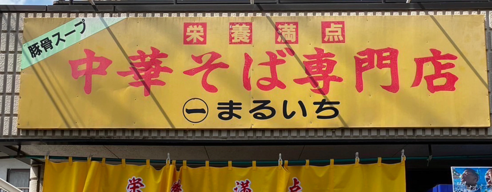

04 / VISIT US
黄色い看板で、
お待ちしています。
所沢駅から、西所沢駅から。お昼にも、お仕事帰りにも。

CHUKASOBA MARUICHI
中華そば専門店
まるいち
埼玉県所沢市星の宮1-2-8
所沢駅西口から徒歩約10〜12分
西所沢駅から徒歩約10分
OPENING HOURS
営業時間
| 曜日 | 昼 | 夜 |
|---|---|---|
| 火・水・木 | 11:00–15:00 | 18:00–22:00 |
| 金・土 | 11:00–15:00 | 18:00–23:00 |
| 日 | 11:00–15:00 | 18:00–21:00 |
| 月 | 定休日 | |
臨時のお知らせは、公式Instagramをご確認ください。
Instagramを見る（新しいタブで開きます）BEFORE YOUR VISIT
ご来店の前に。
現金以外でも支払えますか？
現金のほか、クレジットカード・QRコード決済・交通系電子マネーをご利用いただけます。
子ども用のメニューはありますか？
お子様専用メニューのご用意はございません。
車で来店したいのですが、駐車場はありますか？
お車でお越しの際は、駐車場所について事前にお電話でご確認ください。
お店へ問い合わせたいときは？
お電話（04-2925-7515）にてお問い合わせください。店舗の最新情報は公式Instagramでもご案内しています。